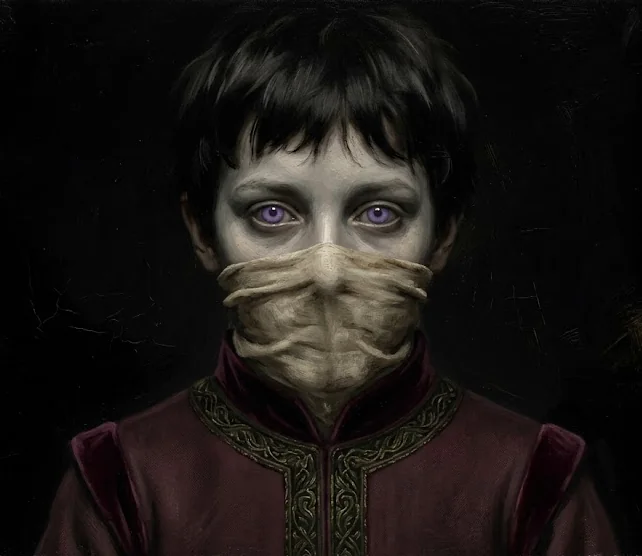
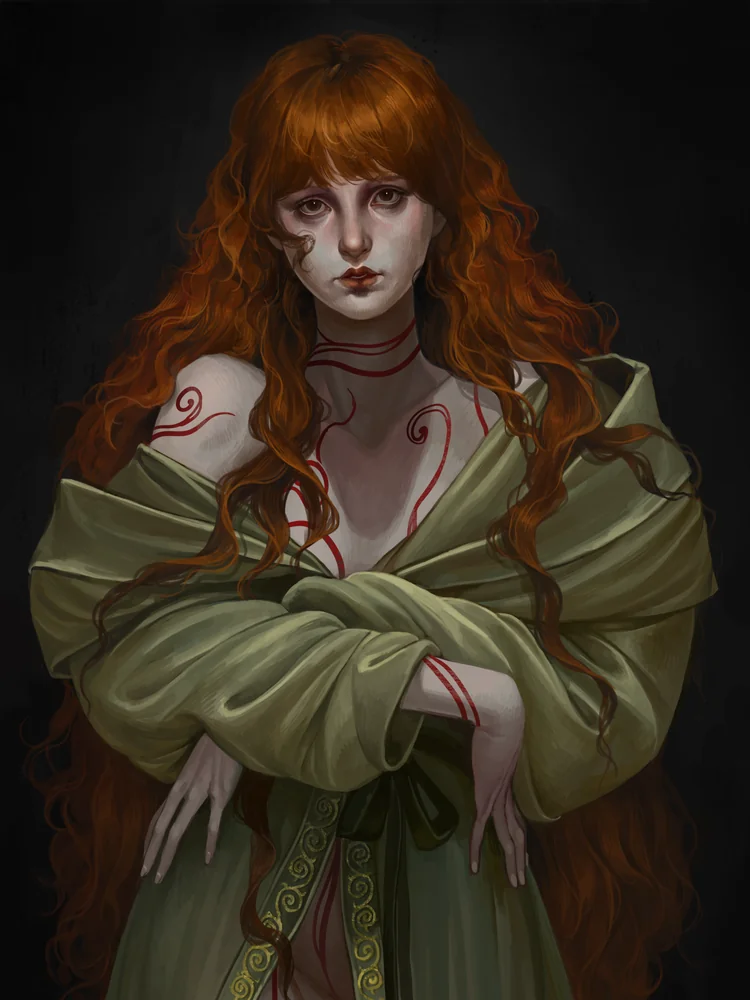
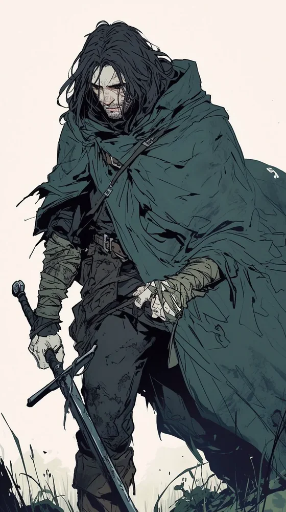

Home›The Coterie
The Coterie
Four young Cainites, homeward from Norway · 1242
The errand-runners Mithras trusts to fetch what no hired mortal can be trusted with — dangerous, low-status work that most Kindred do not survive long enough to profit from, and precisely for that reason one of the few ladders a hungry neonate can climb. They have been a coterie perhaps two years, a handful of jobs deep: long enough to know the basics of one another, not long enough to be friends by default. Session One was the first night it cost any of them anything.
The Four
✦
Tomisława z Białowieży · "Queen of the Swamp"
The occult and infrastructural core
A brilliant, fragile political glass cannon walking the rigid Road of Kings with an aura of supreme, chilling self-mastery. She is the coterie's engine: she opened her wrist into a barrel of drinking water, put her senses five hundred metres out through the sea, found the raider hull grinding against her own, and pulled it off on a swell — the single decisive act of the fight, performed while everyone else was stabbing people. She is also the most fragile body at the table, and Session One demonstrated that at greater length than she would like.
She did not choose these three. She chose Mithras, and they came attached. Her element is water; her appetite is fire — and she now knows her out-of-category peer cannot help her reach it.
Her complete dossier — attributes, disciplines, rituals, household and herd — lives in the Household of Białowieży document.

Eustace the Kiasyd · "I'm not like the other children"
Her one true peer
A fae-touched Lasombra embraced into a twelve-year-old's body more than four decades ago — a creature past fifty wearing a child's frozen shape. Proud of the clan, unbothered by the faith (it's all real, and none of it's real is how I view it), and by turns petulant and coldly calculated: a sadist whose cruelty points toward mastery rather than appetite. He spent one fight patiently sawing into a man's skull with a knife and Strength 1 to get at the brain, and fabricated an entire noble childhood on the spot. London's Lasombra keep him at arm's length and post him as a local watcher; he is content with the leash, because distance is room to manoeuvre.
To Tomisława: her equal by armistice — two absolute convictions of superiority that have agreed not to fight. He has conceded she is genuinely, if provincially, noble; he has also, now, watched her lose — wept and thrashing in Oscar's arms — and said nothing about it. The next time he asks her for Vicissitude, he will be asking from a position he did not hold before.

Méabh "Tomisława's Irish cousin"
Guide, liar, and the coterie's hinge
One of the last of a doomed bloodline — carrying a fragment of her sire's soul and a literal piece of her forest, hunted by the Gangrel who would end her line, split from her sire in a raid and hoping to find him again. She walks the Road of the Beast, hunts with a pack, and works her magic as runes cut into her own skin, matriarchal rites she traces to the Crone. On the surface she is sweet, innocent, mild-mannered; underneath she is five steps ahead and wants to be the predator in every room. A spider playing at being a lamb.
To Tomisława: the kinswoman she invented. By the plain rules Méabh should rank low; instead Tomisława lifts her clean off the ladder and holds her out-of-category — a peer on the old powers of the earth, unmeasured on all else. Their cover is welded together: Méabh's claim to kinship survives on Tomisława's credit, which makes each a hostage of the other. Her heart, though, belongs to Oscar, not her patron.
Scéalán — the red wolf
Her familiar: a red wolf grown large on her blood, named for one of the hounds of the Fianna cycle. Blood-fed and battle-scarred; he intercepted two raiders in the hold and dragged one down by the calf so Oscar could finish it. Where Méabh goes, he is put between her and the room.

Oscar Castro Avis "Disgraced" · the fallen knight of Lisbon
The muscle, and the group's reluctant conscience
A Brujah of Lisbon — philosopher-kings, not rebels, in these nights. A fourth or fifth son raised to the sword and to real purpose, a knight who believed in it, undone by scandal and a lord's betrayal and dragged out of that ruin by a sire who eventually tired of his self-pity and sent him to the Isles with a hard instruction: go find yourself. His nature is honourable; his demeanour is nihilistic. He reads people well, and is a violent man trying to stop reaching for violence as the easy answer. His surcoat is a black Templar standard — black paint laid over what, up close, you can tell used to be a cross.
Session One was largely his fight: Blood Surge, Potence and Claymore through a hold full of raiders, ending fed to zero on drugged blood and cheerful. Then he broke Tomisława's jaw open to pry her off Bronisława and held her through the frenzy — competent, unsentimental, unpaid.
To Tomisława: the one she files as her inferior — not for clan (he shares her rank exactly) but for abdication, a nobleman playing hired sword. She refuses to see that they are mirror childer, both cast out by hard sires to remake themselves at a distance: she is what that process looks like when it succeeds, he is what it looks like mid-collapse. He is quietly becoming the group's exasperated uncle — and something with no drawer in her filing system.
The Shape of the Group
✦The coterie's own reckoning: two high-clan aristocrats at the top, two displaced exiles beneath them, and Méabh moving across the seam. What Session One demonstrated is that the reckoning and the actual load-bearing structure are not the same object. Under pressure the traffic did not run along the status lines — it ran Eustace and Oscar in the water, hauling and mocking each other; Oscar and Tomisława on the barn floor; Méabh and a nun.
Tomisława and Eustace agree they are the top pair — and disagree on how to rank the bottom one. Eustace lumps Méabh and Oscar together as beneath them both; Tomisława files Oscar low but holds Méabh out-of-category. Méabh's cover now rests entirely on Tomisława's credibility, which gives Tomisława a hostage and Méabh a bomb. And Oscar — the one they agree to file as "help" — spent the session being the most consequential body in the group, and is not staying filed.